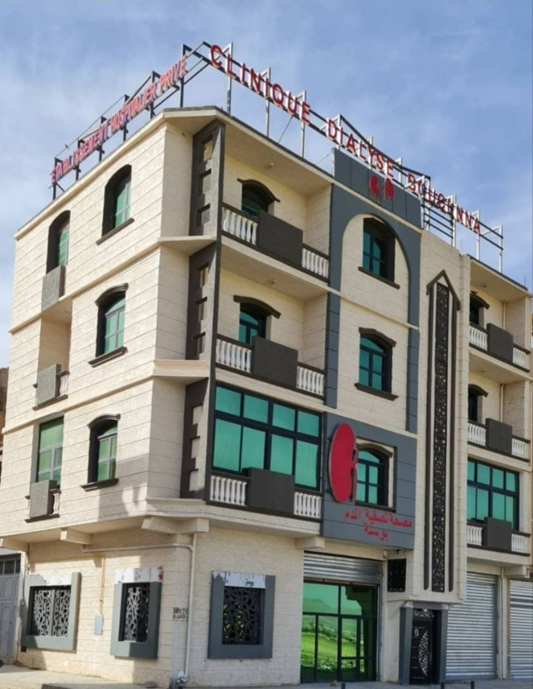
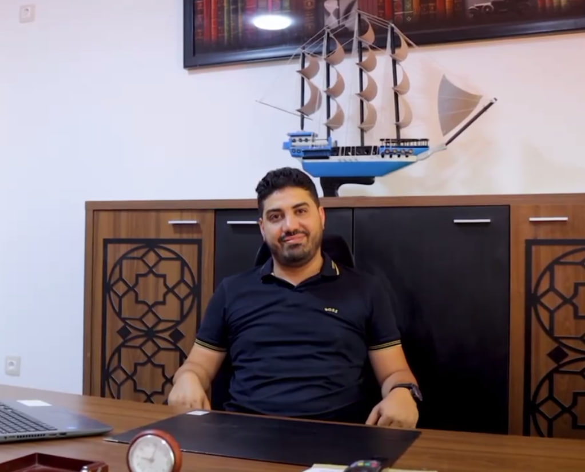
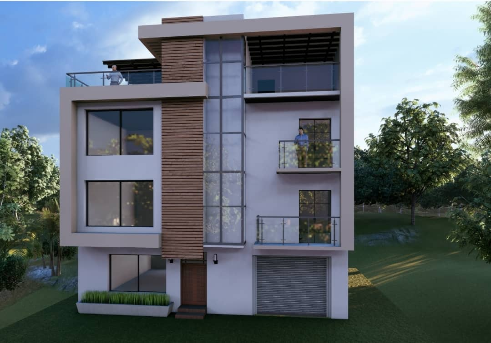

Nos Services &
Départements Médicaux
Hémodialyse, consultations de néphrologie, transport sanitaire médicalisé et pharmacie spécialisée — tout pour votre prise en charge complète.
Séances
d'Hémodialyse
Nos centres d'hémodialyse disposent de plusieurs postes de dialyse équipés des dernières générations de générateurs, disponibles du dimanche au jeudi.
Chaque séance est supervisée par une équipe médicale et paramédicale expérimentée, dans un environnement stérile et confortable.
Générateurs de dialyse de dernière génération Protocoles de stérilisation stricts Surveillance médicale continue Prise en charge CNAS / CASNOS à 100%


Consultations de
Néphrologie
Les consultations de néphrologie sont assurées par le Dr Nassim Boucenna, spécialiste en maladies rénales et hémodialyse, accompagné de médecins généralistes expérimentés.
Suivi de l'insuffisance rénale chronique Adaptation des protocoles de dialyse Suivi personnalisé et bilan biologique Gestion des complications rénales
Transport Sanitaire
24h/24 – 7j/7
Notre service de transport médicalisé assure la prise en charge et le transport des patients entre leur domicile et le centre de dialyse, ainsi qu'entre les wilayates.
Ambulances médicalisées équipées VSL (Véhicules Sanitaires Légers) Transport inter-wilayates Chauffeurs disponibles 24h/24 et 7j/7


Pharmacie
Spécialisée
Notre pharmacie spécialisée est intégrée au centre d'Aïn Oulmène (Sétif) et assure l'approvisionnement en médicaments et consommables liés à l'hémodialyse et à la prise en charge rénale.
Médicaments et consommables pour dialyse Suivi pharmaceutique personnalisé Coordination avec l'équipe médicale
Vous souhaitez en savoir plus ?
Notre équipe est disponible pour répondre à toutes vos questions.